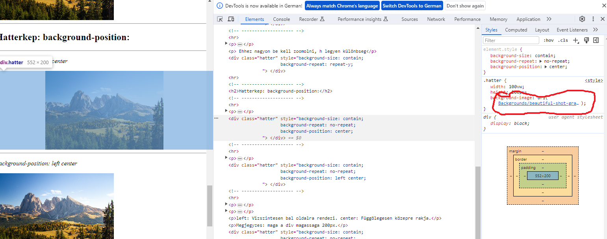
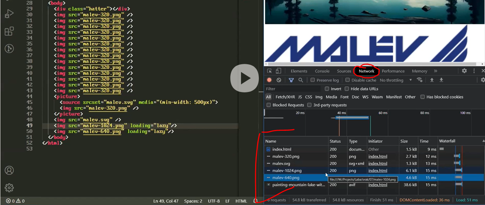

Alapvetöen 4 tipusu kepet szoktunk nagyon gyakran hasznalni: jpg, png, webp (webpicture), svg
Hasznalt html-tag: img
alt attributum: az img egyik attributuma. Celja: akadalymentesites. Specialis böngeszöknel, felolvasoprogramoknal elmondja, h mi van a kepen. A kepek alapjan leirasokat gyarto algoritmus most az AI ternyerese miatt egyre fontosabb lesz. Ilyenkor nem kell alt-ot kitöltenünk, ha nem akarunk.
Kepeket egymas ala: display: block


Eredeti meretben nincs nagy különbseg.
Viszont ha bezoomolunk, akkor latszodik a különbseg.
A png bar nem veszit a tömörites miatt a minösegeböl, de nem lesz nagyithato a vegtelensegig.
A vektoros fajlokat (svg) vegtelensegig lehet nagyitani es eles marad. Az svg-fajlt meg lehet nyitni html-ben is, latszik a matematikai leirasa.
Az SVG formatum valojaban egy XML fajl, meg lehet nyitni, bele lehet szerkeszteni
Az SVG XML-jebe be lehet agyazni egy pixeles kepet (pl JPG-t), de ezt ne tegyük!
Vannak pici logok nagy meretben -> ezeket SVG-vel lehet legköltseghatekonyabban
body{ padding: 0; margin: 0; }
A background-image: url() CSS property nem arra valo, hogy kepet jelenitsünk meg, hanem hogy egy div-nek vagy barmilyen HTML tag-nek a hatterkepet valtoztassuk meg.
SVG-t is beagyazhatunk.
Tipp kep letöltesre: Freepik
Siman a hatter style:
Ennel a beallitasnal background-size: auto auto; -t hasznal automatikusan
hatter-style kiegesztive:background-size: 100% 100%;
-> Szét van nyújtva, felveszi a befoglalo div meretet
Elözö modositva: background-size: auto 100%;
Szelesseg auto, magassag 100%.
A böngeszö kiszamolja, h ha a div-nek definialt magassagba (200px) a kepet 100%-osan bele akarja rakni, akkor a szelesseget hogy kell aranyositani -> proporcionalisan atmeretezei.
A kep ilyenkor ismetlödik, ez alap müködesmodja a background-image CSS propertynek.
background-repeat: no-repeat;
Csabi altalaban ezt szokta hasznalni.
(Itt a background-size erteke contain, kesöbb lesz meg a cover, lasd itt)
background-repeat: round;
background-repeat: repeat-x;
background-repeat: repeat-y;
Ehhez nagyon be kell zoomolni, h legyen különbseg
background-position: center
background-position: left center
background-position: left center
background-size: 200px 100px;
left: Vizszintesen bal oldalra rendezi. center: Függölegesen közepre rakja.
Megjegyzes: maga a div magassaga 200px.
background-size: cover;
Ezt ha pl oldal tetejen csinaljuk, akkor ugy meretezi a kepet, h ne maradjon feher resz a divemben.
background-size: contain;
Ez pedig minden keppen beteszi az egesz kepet (torzitasmentesen) a divembe, hogy a kepböl minden latszodjon.
0:23:30-nal
Ha a kepet div-be rakjuk background-image-kent, akkor azt arra is hasznaljak, h ne tudják olyan könnyen lementeni a kepet, mintha img tagben lenne. Igy ugyani, ha a div-re jobbklikk "mentes maskent"-et nyomunk, akkor nem a kepet fogja lementeni, mivel a div-re mutatunk.
Trükk letölteshez: ahol a kepen be van jelölve jobb klikk -> megnyitas masik tabon -> onnan le lehet tölteni a teljes kepet.
Nyilvan nem egy erös vedelem, de sokszor tenyleg csak ezert teszik background-image-be, mert nem szeretnek, h mas emberek ellopkodjak.
Erre van a picture HTML-tag. Ez egy ujkori talalmany (HTML5), es meg lehet benne adni egy sima img-t. Lenyege, h itt többfele forrast meg lehet adni. Kisebb kijelzökön egy lebutitott kepet fog megjeleniteni, a nagyobb felbontasun pedig egy jobb minösegü kepet fog megjeleniteni.
source tag, srcset attributum:ezzel lehet megadni, h hanyfele felbontas van meg ugyanehhez a kephez. Ez azert fontos, mert van pl a mobiltelefon retinakijelzöje, ami akkora felbontasu (vagy meg nagyobb), mint a full-HD monitor kijelzöje, csak a retinakijelzönek nagyon apro a pixelje.
Emiatt a retinakijelzön egy 320-es kep eleg homalyosan fog megjelenni.
Ha ezt alkalm
Teszt: ami itt definialva van, az akkor lesz a kepernyön lathato, ha bezoomolunk es a böngeszö szelesseget manualisan valtoztatjuk. Ha 500px ala kerül, akkor homalyos a kep, ha 500px föle, akkor eles.
Relativ sok es nagy kepnel hasznos. Azt jelenti, h akkor fogja csak betölteni, ha a kepernyöre kerül, addig nem. Ez eröforrasok, savszelesseg szempontjabol elönyös.
Local host-on (helyi szamitogep) nem lehetett demonstralni, mert tudja a böngeszö, h annak nincs költsege, h innen betöltse
Lenyeg, h itt a loading="lazy" attributomot kell hasznalni a nagyobb fajlokra
Ezt a DevTools -> Network fülön lehet majd nezni, h mekkora savszelesseget hasznalt.
Hasznalhato iframre-re es video-ra is -> a videokat sem kezdi el becashelni egeszen addig, amig oda nem ertünk. iframe-nel hasonlo a helyzet, erröl meg majd beszel.
Fontos: az img tag-nek legyen fix a merete (width, height)! Különben megeszi az eröforrasokat. Miutan a böngeszö betöltötte a kepeket, es pl a 600.-nal tartunk, utana amit meg nem töltött le, kiszamol vmit (???), rendereli -> csomo mindent eltol scrollozas közben, ami nagyon eröforrasigenyes. Pl ha atscrollozunk 3-4-5 kepen, a böngeszö egyesevel betölti öket es egyesevel lökögeti az alatta levöket lefele. Az eröforras problema mellett nem is jo elmeny.
Az eröforrasigeny megjelenik pl abban, h a mobil gyorsabban fog lemerülni.
Attributumok:
Innen folytatni!!!
Azert alkalmatlan HTML grafikak megjelenitesere, mert minden egy doboz. Pl haromszögetnem lehet. Vagy h vhogy megis, nem lesz jövöallo.
Pl: webshop, add meg a rendelesi adataidat ....
Az SVG alapvetöen alakzatokkal dolgozik, es a koordinatakat kell megadni, aztan ö kitölti. Az SVG a forraskodja az iveknek. -> HTML-ben at tudjuk erni Rendes szerkesztök: Inkscape, Adobe InDesign,
Az SVG kep kitöltöszinet felül tudjuk irni. Ez föleg ikonoknal fontos, amiknek a szinet adott esetben
SVG-vel erdemes megjeleniteni öket.
Ebben matek van, rengeteg matek.
D3: matematikai segedeszköz ehhez. Tipp: www.d3js.org
Ez nagyon kenyelmesse teszi a munkat chartokkal.
"Ez a kezmüves charting"
Elönye: mi rakhatjuk össze. Hatranya: többet kell vele dolgozni.
GoogleCharts mashogy müködik:
szeretnek egy vonalgrafikont es a GoogleCharts kirajzolja.
"Ez a kenyelmes charting"
Elönye: csak megadjuk az adatokat meg nehany dolgot.
Hatranya: sok alapertelmezett dolgot nem tudunk modositani.
Ad egy vasznat, amire pixelenkent lehet rajzolni.
Nem vektorgrafikus dolgokra valo, hanem arra, h sokszor valtozzon.
Arra valo, h nagyon sok grafikai valtozast is megjelenitsen.
3D-s dolgokat is lehet itt rajzolni, pl targyakat körbe lehet forgtni.
Nagy programokat canvasra rajzolnak